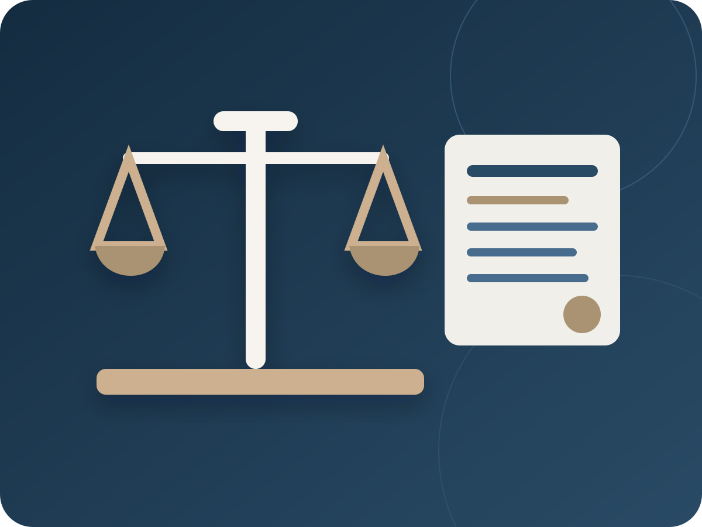

Corporate & Company Law
Legal opinions, instruments, company matters, governance and corporate advisory.
Company · Governance · Instruments02 / Services
The practice covers a broad set of legal issues with an emphasis on practical analysis, clear instruments, resolution strategy and compliance.

Practice areas
Each instruction begins with the facts, the relevant legal framework and the practical objective the client needs to achieve.
Legal opinions, instruments, company matters, governance and corporate advisory.
Company · Governance · InstrumentsLitigation, mediation, negotiation and resolution strategy for complex disputes.
Litigation · Mediation · NegotiationInitiating and supporting legal compliance processes, risk review and regulatory questions.
Compliance · Risk · RegulationProperty transactions, conveyancing, land documentation and legal due diligence.
Land · Property · Due diligenceLegal analysis involving insurance, investment structures, securities and capital markets.
Insurance · Markets · InvestmentAdvisory on constitutional, human-rights and public-law questions.
Constitutional · Rights · Public lawRegional legal questions and cross-border issues within the East African Community context.
EAC · Regional · Cross-borderAI, blockchain, digital governance, virtual currency, media and emerging-technology issues.
AI · Blockchain · Digital systemsLegal and regulatory questions arising within healthcare and health-sector operations.
Health · Regulation · AdvisoryHow an instruction moves
A simple four-stage workflow keeps the legal work focused and understandable.
Clarify the facts, documents, parties and practical objective.
Identify the legal framework, evidence, risk and available routes.
Prepare advice, instruments, negotiation, compliance action or dispute strategy.
Confirm implications, next steps and any ongoing legal or regulatory obligations.
Share the facts and receive guidance on the next practical step.